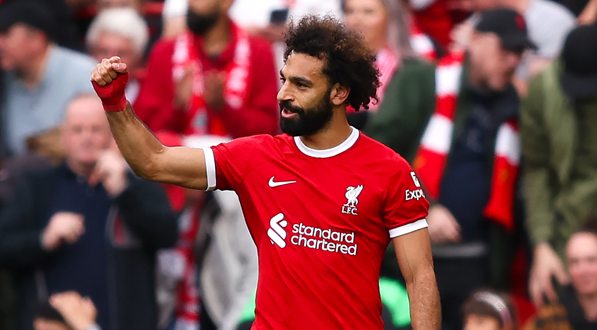

|  |
| MOHAMED SALAH
Pemain Sepakbola |
HALOO SEMUANYAAA...
Kalian ingin tahu tentang hal - hal menarik tentang sosok pesepak bola yang terkenal dan hebat dalam melewati lawan hingga mencetak goal asal mesir?, yuk kita simak dan baca disini.
Mudah saja untuk mengagumi Mo Salah dari penampilannya di lapangan. Torehan total 43 gol dalam 47 laga dari semua ajang pada tahun 2018 adalah sesuatu yang tak bisa dilakukan oleh setiap pemain. Sebagai perbandingan saja, Lionel Messi yang disebut-sebut sebagai salah satu pemain terbaik dunia itu mencetak 43 gol dalam jumlah pertandingan yang lebih banyak musim ini yaitu 51.
Efek kehebatan Salah pun berimbas keluar lapangan. Chant para pendukung Liverpool untuknya jadi salah satu contohnya. “If he’s good enough for you, he’s good enough for me. If he scores another few then I’ll be Muslim too.” (“Jika dia cukup bagus untukmu, begitu juga untukku. Kalau dia bikin beberapa gol lagi, aku akan jadi Muslim juga.”)